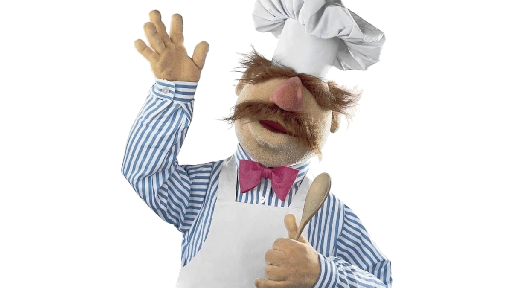

Najlepszy kucharz w Europie i nie tylko

O mnie:
- „Kreatywny kucharz z pasją do smaków z całego świata. Uwielbiam eksperymentować z nowymi składnikami i technikami, aby zaskakiwać swoich gości wyjątkowymi daniami.”
- „Kocham gotować z sercem i dbać o każdy detal. Moje dania to połączenie tradycji z nowoczesnością, zawsze przygotowane ze świeżych, lokalnych składników.”
- „Kucharz, który nie boi się wyzwań. Zawsze szukam nowych inspiracji, by w mojej kuchni dominowały oryginalne smaki, a każdy posiłek był niezapomnianym doświadczeniem.”
- „Profesjonalista w kuchni, który z radością dzieli się swoją pasją do gotowania. Moje menu jest odzwierciedleniem miłości do dobrej jakości produktów i kreatywnego podejścia do klasycznych dań.”